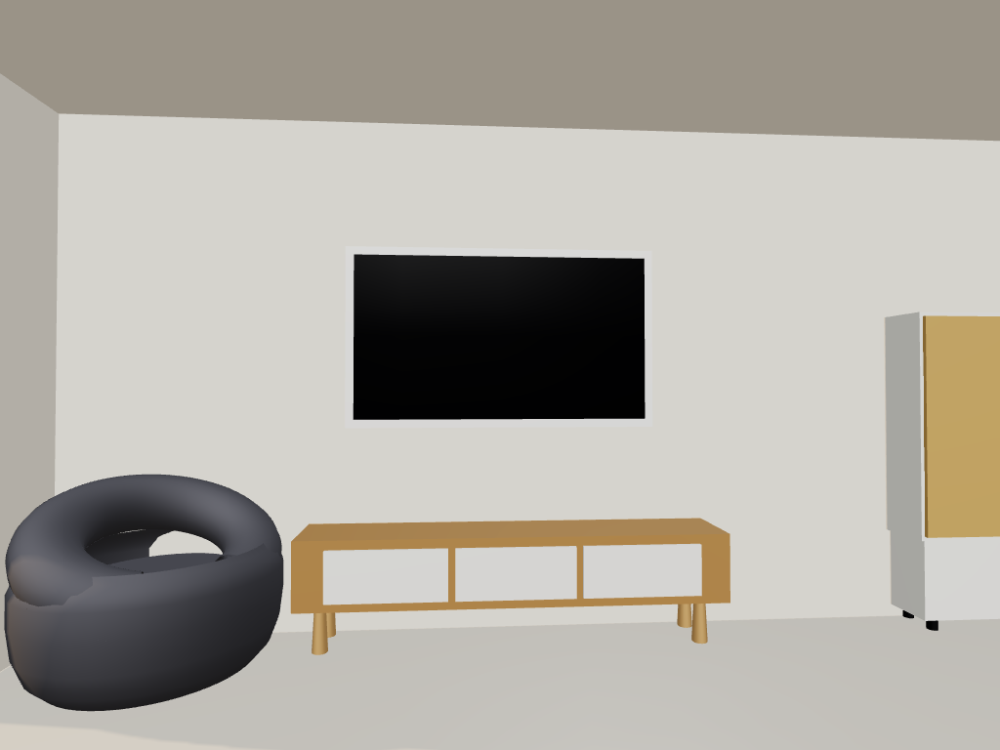
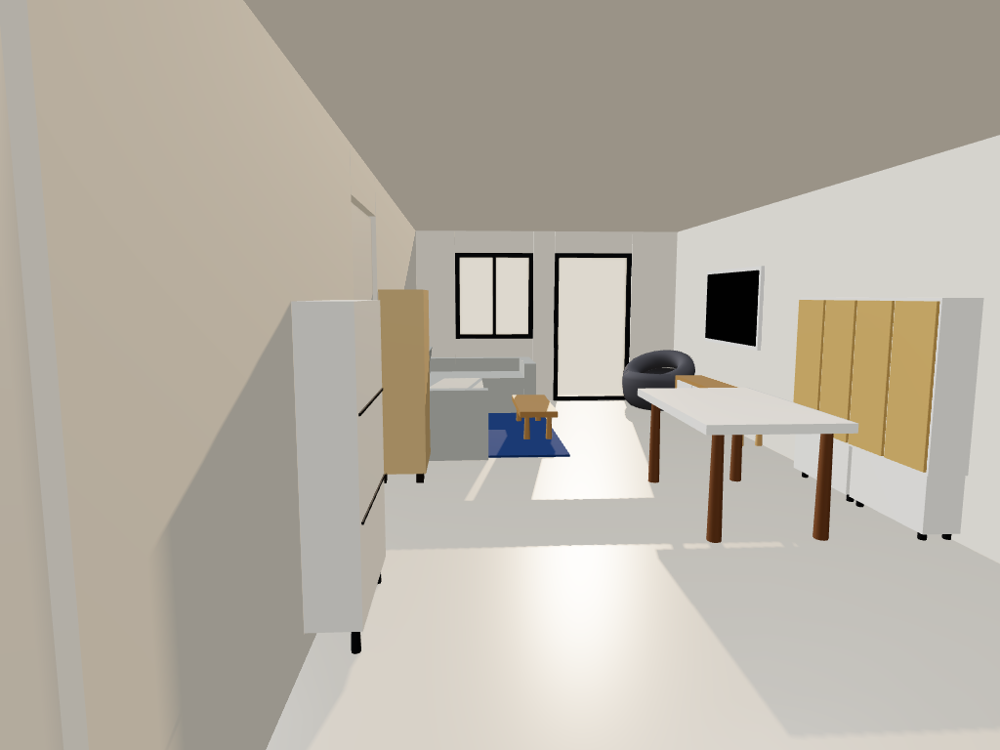

scene2 real-time PBR (this checkpoint)

spike-1 run-2 AI still (rejected path, for reference)

Judge against poc2-plan.md §2 Tier 1: can you decide layout / proportion / color questions from these renders? Materials should read as the right category and color (oak as oak, charcoal pod as dark fabric); lighting shouldn't lie about brightness or mood. Texture-level fidelity (wood grain, weave, rug pile) is rung 2 — not in these images yet. Bottom row: spike-1 run-2 AI stills of the same views, for reference on what the rejected path looked like.

